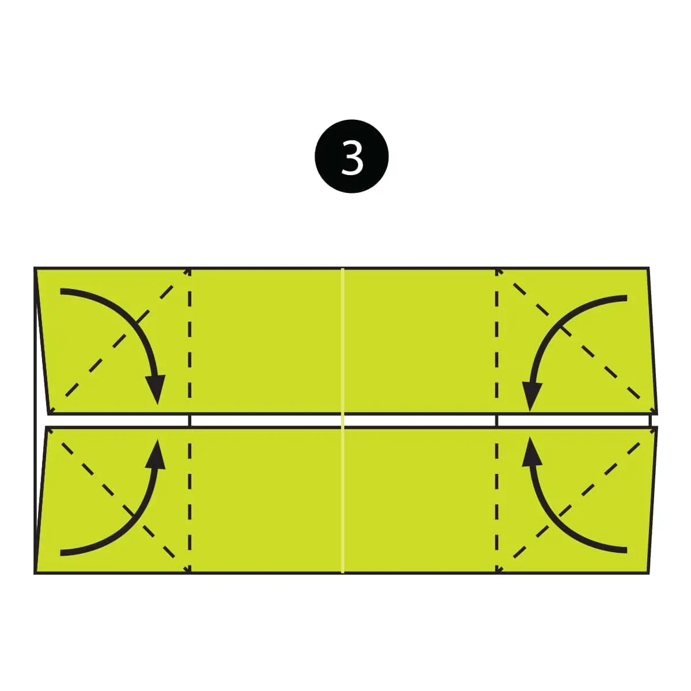
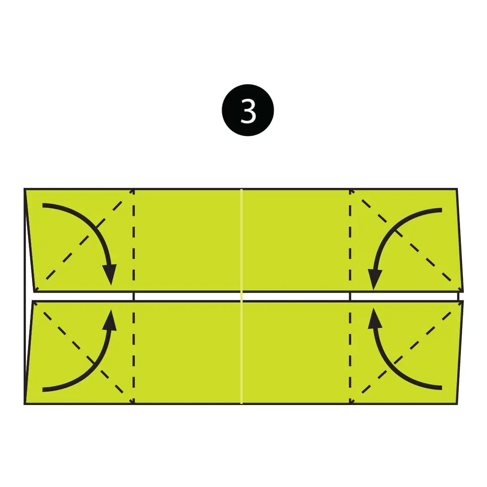
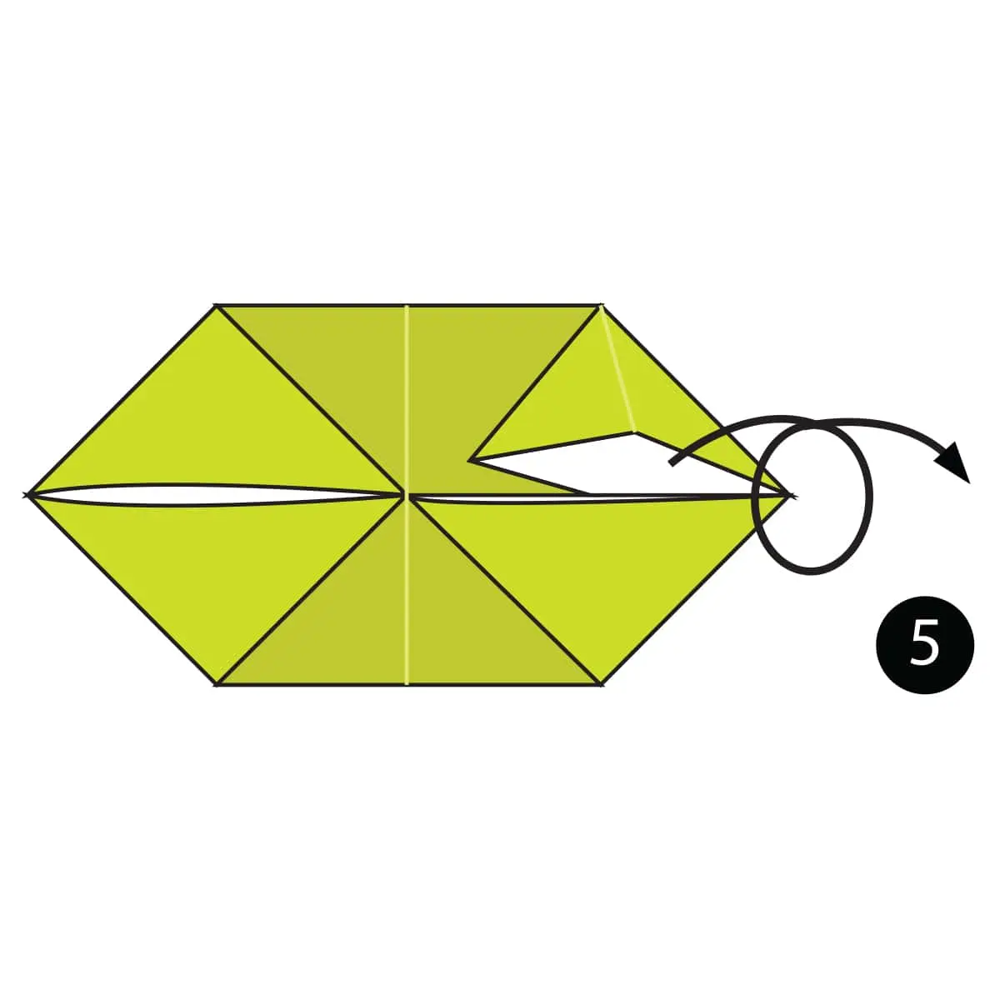
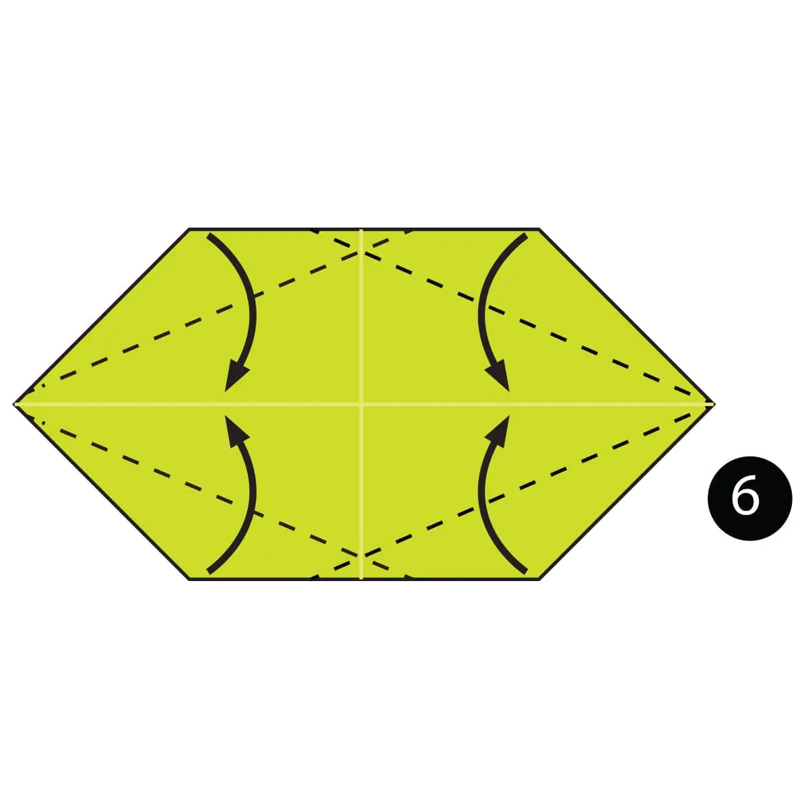
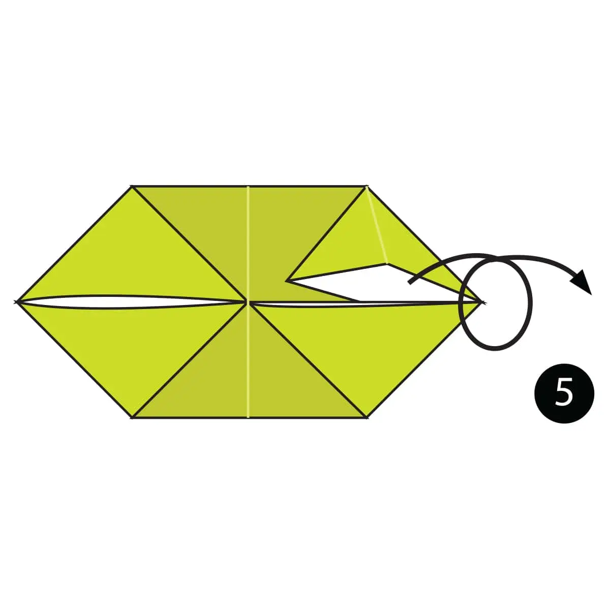
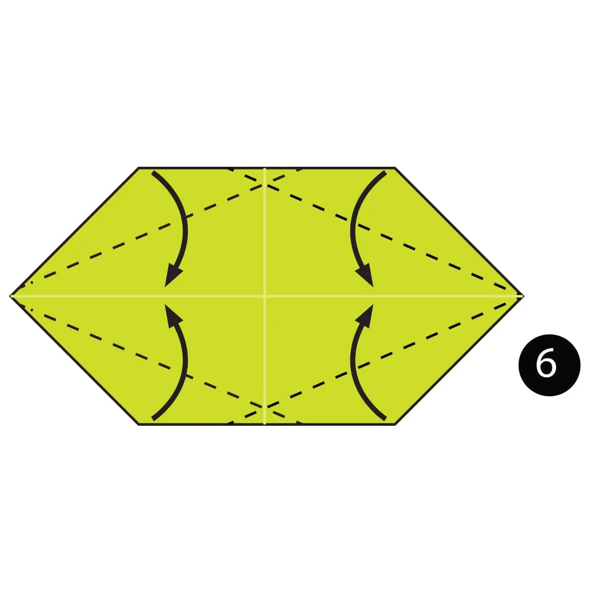
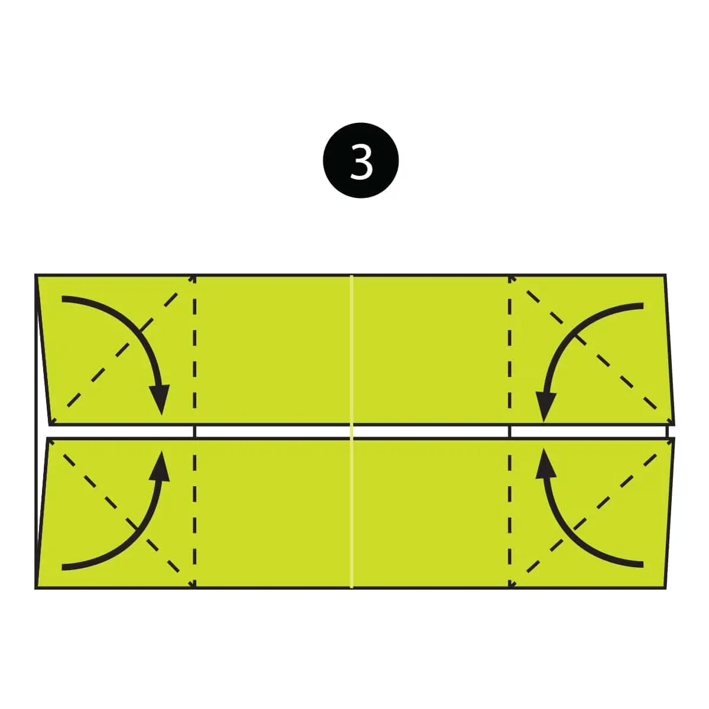
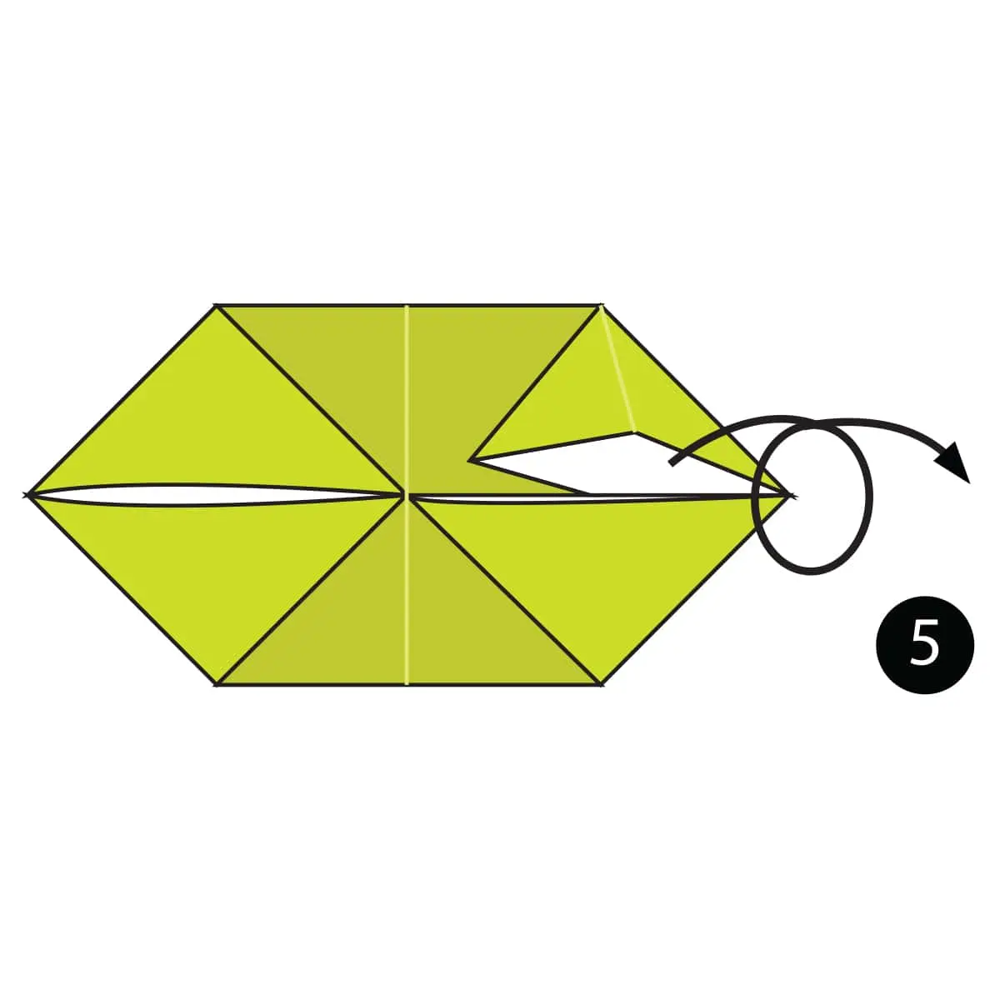
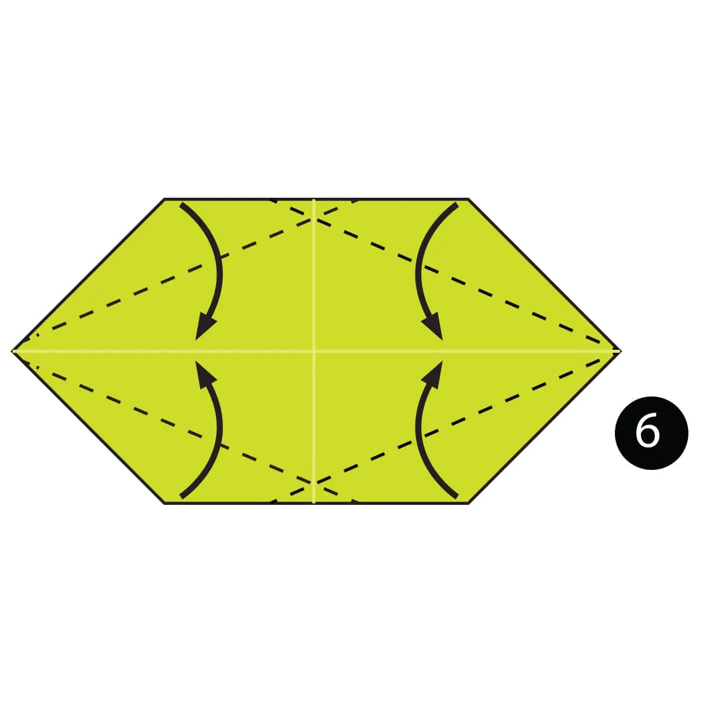

 





Step 1) Fold and unfold the paper in half both ways. Then fold the top and bottom to the centre.
Step 2) Fold and unfold both sides to the centre.
Step 3) Fold all the corners down along the diagonal dotted lines.
Step 4) Open up each corner and Squash Fold them flat. See the next step to see how each corner looks after the Squash Fold.
Step 5) Turn the paper over.
Step 6) Fold the edges of the paper down along the dotted lines.
Step 7) Turn the paper over.
Step 8) Fold the 4 flaps of paper out along the dotted lines.
Step 9) Fold the paper in half over to the back.
Step 10) Inside Reverse Fold the paper up along the dotted line.
Step 11) Outside Reverse Fold the other side of the model down along the dotted line to form the tail.
Step 12) Make another Outside Reverse Fold on the end of the tail.


